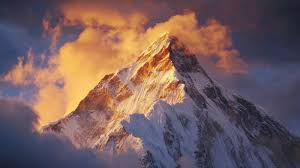
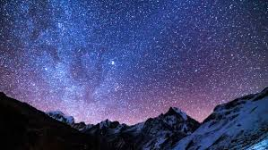

A Visual Story of Everest
This gallery presents Mount Everest as more than a mountain — it is a living landscape shaped by time, weather, and human exploration. Each image captures a different moment in the life of the world’s highest peak, from peaceful snow-covered horizons to extreme climbing environments.
Together, these visuals create a narrative of scale, danger, and beauty that defines the Himalayas.

The Himalayan Landscape
The Himalayas form the highest mountain range on Earth, stretching across multiple countries and shaping the climate and geography of the region. Mount Everest stands as its most iconic peak, surrounded by massive glaciers and ancient rock formations.
This environment is constantly changing due to tectonic movement and erosion, making it one of the most dynamic landscapes on the planet.

Human Endurance
Every climber who attempts Everest faces one of the most extreme physical and mental challenges on Earth. Thin air, freezing temperatures, and dangerous terrain push the human body to its absolute limit.
Despite this, thousands of people are drawn to Everest every year, driven by ambition, curiosity, and the desire to achieve something extraordinary.

Life at Base Camp
Base Camp is the starting point of every Everest expedition. It functions as a temporary city in one of the most extreme environments on Earth. Here, climbers prepare equipment, train, and adapt to high altitude conditions before attempting the ascent.
Even at base camp, survival is not easy. Cold temperatures and low oxygen levels make daily life physically demanding.

Glaciers in Motion
The glaciers of Everest are constantly moving, reshaping the mountain’s surface over time. This movement creates dangerous terrain, especially in areas like the Khumbu Icefall.
Massive blocks of ice shift unpredictably, making this one of the most hazardous sections of the climb.

The Death Zone
Above 8,000 meters, the environment becomes extremely hostile to human life. The lack of oxygen affects both physical performance and mental clarity.
In this zone, every decision matters. Climbers must move efficiently and carefully to avoid life-threatening conditions.

The Summit
The summit of Mount Everest represents the highest point on Earth, offering views above the clouds and across the entire Himalayan range. It is a moment of achievement, exhaustion, and respect for nature’s power.
However, climbers must not stay long. The descent is just as dangerous as the climb itself.